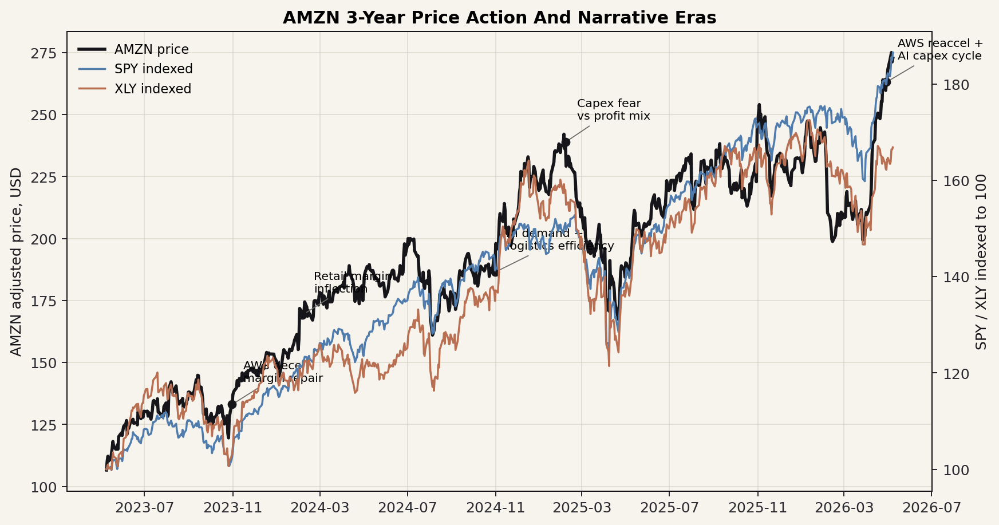
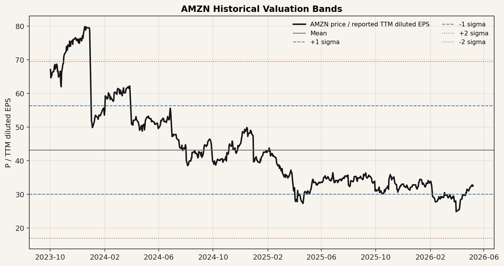
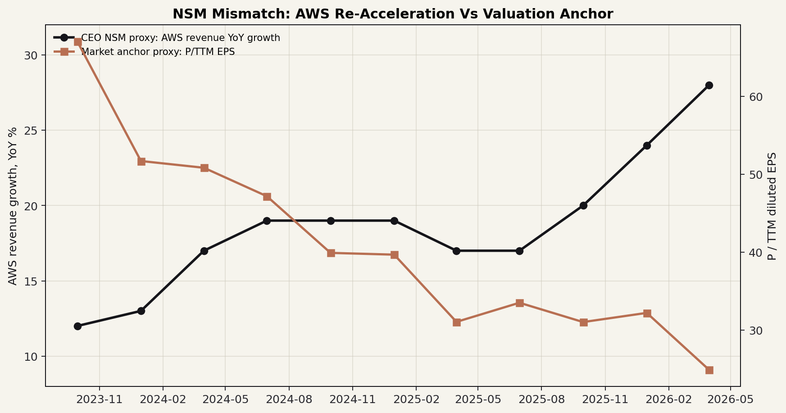

Ticker: AMZN
Date: 2026-05-11
Classification: Watchlist / Quality Compounder
结论：Amazon 值得持续跟踪，但暂不建议直接进入下一阶段深挖。 这不是因为业务质量不够，而是因为当前股价已经把相当多的 AWS 再加速、广告高增和零售利润率修复纳入定价。真正的错锚假设是：市场把 2026 年约 2000 亿美元级别 Capex 主要当作 FCF 压制，而管理层认为这是被客户承诺支撑的 AI 算力资产建设，未来两三年会转化为营业利润、ROIC 和 FCF。
这个错锚方向有吸引力，但还不够“便宜”。截至 2026-05-08，AMZN 收于约 272.68 美元，接近 52 周高点 278.56 美元；yfinance 口径市值约 2.93 万亿美元、EV 约 3.03 万亿美元、forward P/E 约 27.6 倍。UBS 与 Bernstein 最新摘要目标价分别约 333 和 315 美元，隐含上行大致在 15%-22% 区间，并非没有空间，但对一个 mega-cap 来说还不足以单独构成组合层面的重大错误定价。
| Item | Latest Situation |
|---|---|
| Market Data & Positioning | 2026-05-08 收盘约 272.68 美元；52 周区间约 196.00-278.56 美元；市值约 2.93 万亿美元，EV 约 3.03 万亿美元；机构持股约 68.3%，short float 约 0.95%。 |
| Key Financial Metrics | 2026Q1 收入 1815 亿美元，同比增长 17%；经营利润 239 亿美元，经营利润率 13.1%；AWS 收入 376 亿美元，同比增长 28%，经营利润 142 亿美元；TTM operating cash flow 1485 亿美元，但 TTM FCF 降至 12 亿美元，主因 AI 相关 property/equipment 支出大增。 |
| Price Action & Technicals | 30 日价格从约 199 美元反弹至 273 美元附近，明显站上 EMA50；MACD 仍为正，但柱状图收敛；RSI 约 75，短期已偏超买，追价的风险回报下降。 |
| Positioning | 卖方摘要整体仍偏正面：UBS TP 333、Bernstein TP 315；但共识辩论集中在“AI Capex 是否能兑现 ROIC”以及 Q1 净利润中 Anthropic 投资收益的可持续性。 |
| Key Metric | Value | Implication |
|---|---|---|
| AWS growth | 28% YoY | 15 个季度最快增速，是市场是否愿意淡化短期 FCF 压力的核心验证点。 |
| Advertising revenue | 172 亿美元，+22% | 高毛利广告继续补贴零售和 AI 投资，也支撑 Rufus/agentic commerce 的货币化叙事。 |
| TTM FCF | 12 亿美元 | 这是市场折价的表面锚；若未来收入滞后 Capex 的时间差被证伪，估值会受压。 |
Pricing Anchor & Embedded Expectations: 当前市场最直接的锚是 forward P/E / EV-EBITDA 与 FCF 恢复路径，而不是传统零售 GMV。卖方框架也印证这一点：UBS 摘要使用 P/E + FCF 混合口径、30x 倍数；Bernstein 使用零售 2027E EV/S 3x 与 AWS 2027E EV/EBIT 25x 的 SOTP，并用 DCF 校验。换言之，市场已经不是单纯把 Amazon 当零售商，但仍可能低估 AI 算力供给、Trainium/Graviton 自研芯片和广告/物流平台化对中期 ROIC 的作用。
Peer Benchmarking: AMZN 相比 MSFT/GOOGL/META 的利润率显著更低，但收入增长已重新加速，估值处在云/广告平台与零售平台之间。与 WMT 相比，AMZN 的 EV/Sales 更高但收入增长和利润结构质量明显不同。
| Company | Market Cap | Forward P/E | EV/EBITDA | Revenue Growth | Operating Margin |
|---|---|---|---|---|---|
| AMZN | $2.93T | 27.6x | 19.4x | 16.6% | 13.1% |
| MSFT | $3.08T | 21.4x | 17.0x | 18.3% | 46.3% |
| GOOGL | $4.85T | 27.7x | 29.9x | 21.8% | 36.1% |
| META | $1.55T | 16.8x | 14.2x | 33.1% | 40.6% |
| WMT | $1.04T | 39.7x | 25.1x | 5.6% | 4.6% |
Historical Context & Charts: 三张图显示：股价已从 2025 初的估值压缩中恢复；P/TTM EPS 从 2023 年高位大幅回落后又稳定在 30x 左右；AWS 增速从 2025 年 17% 再加速到 2026Q1 的 28%，但估值并未同步回到早期高位。



NSM Framework:
| Lens | Assessment |
|---|---|
| CEO NSM | 可控 AI 算力供给与利用率：AWS AI revenue run-rate、Bedrock 客户/Token 使用、Trainium/Graviton 预订与价格性能、Rufus 月活和广告 prompts 互动。 |
| Long-term investor NSM | AI/物流/广告三类平台资产的资本回收效率：AWS ROIC、Capex 转收入滞后期、广告利润池、零售履约单位成本下降与外部物流收入。 |
| Market-consensus NSM | AWS 增速、Capex/FCF 压力、forward P/E 与 AWS EBIT 倍数；短期交易层面还看 Q2/Q3 margin guidance 和一次性收益剔除后的 EPS。 |
| Mismatch category | Healthy lag，但不是深度错杀。业务正在从“零售+云利润引擎”转向“AI 算力+广告+物流平台复用”，市场仍用 FCF 谷值惩罚 Capex；不过股价已接近高位，错锚收益被部分提前支付。 |
更低单位算力成本 / 更快配送 / 更高意图广告 → 客户和商家更多工作流迁入 AWS、Prime、Rufus 与广告系统 → 企业与消费者形成默认入口依赖 → 长约、广告预算、履约网络利用率和云迁移提高 → AWS ROIC、广告利润率、零售 margin 与 FCF 恢复
Upside/Downside Asymmetry: 上行来自两条路径：一是 AWS AI backlog 与 Trainium/Graviton 承诺在 2026-2027 年转化为收入，证明 2026 年 Capex 是“预售式扩产”而非盲目军备竞赛；二是广告和履约效率继续把零售从低 margin 成本中心改造成利润池。下行则更直接：若 Capex 继续超收入增速、AWS margin 因芯片/内存/电力通胀下滑，或 Rufus/agentic commerce 稀释广告货币化，市场会重新用 FCF yield 压估值。
Classification: Watchlist / Quality compounder，暂不 Advance。
按 advancement standard 的三项条件：第一，wrong anchor 部分成立，市场可能过度锚定当期 FCF 和 Capex，而低估 AI 算力资产的客户承诺、使用寿命和广告/物流复用价值；第二，material upside 目前不够强，卖方 TP 315-333 美元与当前 272.68 美元相比提供的是中等上行，且股票已接近 52 周高点；第三，validation path 很清楚，未来几个季度可用 AWS 增速、backlog 转收入、Capex-to-revenue 滞后、AWS margin、广告增长和物流商业化收入来验证。因此，本次结论是放入高优先级观察名单：等价格给出更大 margin of safety，或等 AWS/Capex 回收证据足够强再推进下一阶段。
Confirming datapoints
Breaking datapoints
../research/20260511_amazon/collected_resources/AMZN-Q1-2026-Earnings-Release.pdf../research/20260511_amazon/collected_resources/Amazon-2025-Annual-Report.pdf../research/20260511_amazon/collected_resources/edgartools_amzn_summary.md../research/20260511_amazon/collected_resources/earnings_calls/../research/20260511_amazon/collected_resources/20260511_amzn_news_findings.md../research/20260511_amazon/collected_resources/podwise_amzn_aws_ai_ads_retail_2026.md../research/20260511_amazon/temp/search_amzn.jsonl../research/20260511_amazon/collected_resources/20260505_stratechery_amazons_durability.md, ../research/20260511_amazon/collected_resources/20260428_stratechery_altman_garman_bedrock_agents.md, ../research/20260511_amazon/collected_resources/20260501_semianalysis_ai_value_capture_model_labs.md../research/20260511_amazon/collected_resources/20260203_mobiledevmemo_amazon_openai_ads_not_agentic_commerce.md, ../research/20260511_amazon/collected_resources/20260504_mobiledevmemo_amazon_rufus_agentic_commerce.md../research/20260511_amazon/collected_resources/amzn_technical_30d.csv, ../research/20260511_amazon/collected_resources/yfinance_peer_market_summary_20260511.json